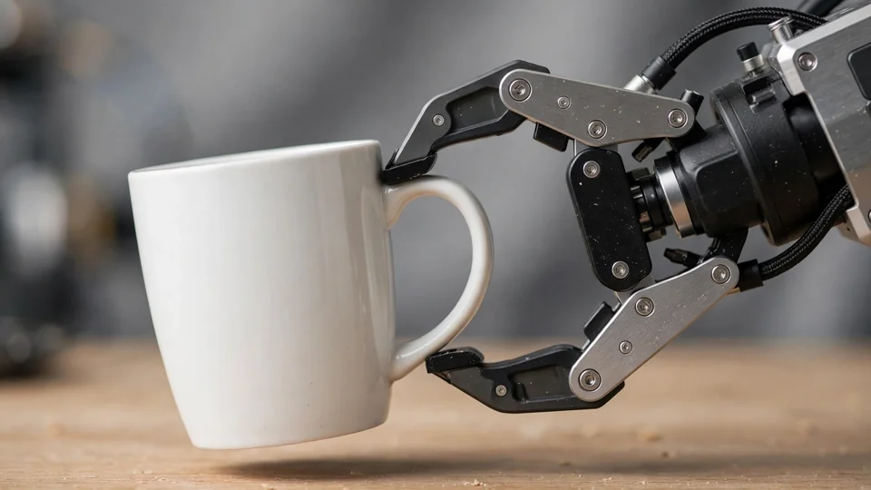
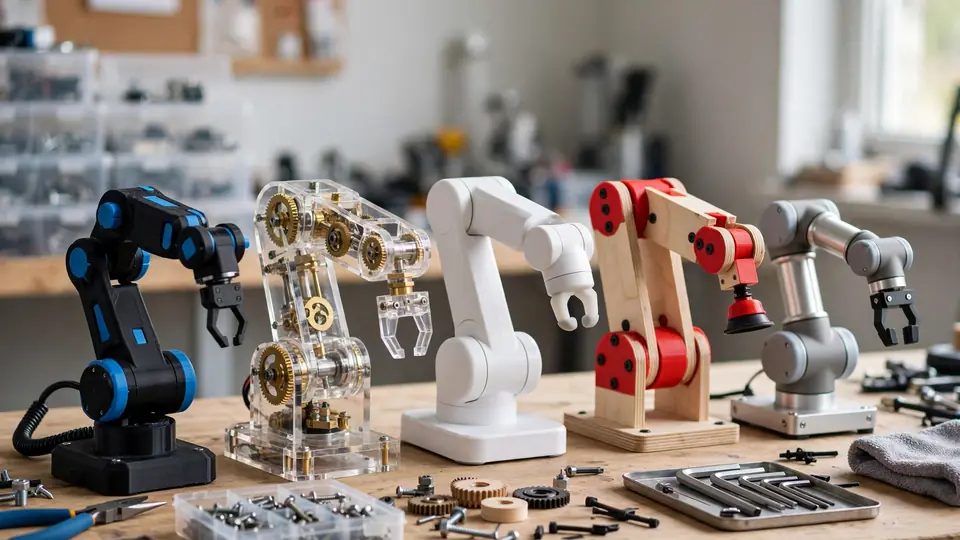

Dream Labs raises $90M to build the brain for everyday robots: Dream-1 turns plain English into motor commands
- Who: Dream Labs, founded in 2026 by former NVIDIA robotics researchers who created DreamZero and World Action Models and worked on NVIDIA's GR00T program; co-founder and CEO Joel Jang.
- What: $90 million in seed funding, led by B Capital along with Kindred Ventures, with participation from A.Capital, Unusual Ventures, SV Angel, Wing VC, Scribble VC and Adrian Aoun.
- When: Announced October 19, 2026, alongside the launch of Dream API.
- Dream-1: flagship robot foundation model, trained on video of people performing everyday tasks; works across robots from different manufacturers and controls any robot with grippers, zero-shot.
- Hardware: more than 20 hardware partners, with supported robots priced from about $2,000 to $10,000; Dream-1 handles tabletop tasks including picking, placing and folding laundry.
- Products: Dream API (camera feed + plain-English instruction → motor commands), Fine-tuning as a Service, and a browser-based Robot Playground; models run in globally distributed data centers.
Dream Labs, an AI company founded in 2026 by former NVIDIA robotics researchers, announced $90 million in seed funding on October 19 — and launched Dream API, which it describes as the first publicly available API for a robot foundation model. The API turns a robot's camera feed and a plain-English instruction into motor commands, even for robots the model has never seen before.
The pitch is the old robotics dream finally productized: one intelligence layer that transfers across hardware instead of months of per-robot programming. Factories worldwide run a record 5 million industrial robots, according to the announcement, yet nearly every one is programmed for a single task, and what it learns can't transfer to another machine. Meanwhile low-cost robots now sell for a few thousand dollars but ship with no built-in intelligence — teaching one robot one task can take specialists months, and a new task or new hardware often means starting from zero.
A model that learns from watching people
Dream Labs' flagship model, Dream-1, works across robots from different manufacturers. It is trained on video of people performing everyday tasks, predicting what will happen next and determining the robot's resulting action. Because it learns from video rather than from a single machine, its capabilities transfer across hardware: out of the box, Dream-1 can control any robot with grippers, zero-shot.

The company says Dream-1 can already handle tabletop activities such as picking up and placing objects and folding laundry, and that it currently works with more than 20 hardware partners whose supported robots range in price from approximately $2,000 to $10,000. Planned extensions include wheeled mobile robots and systems with more dexterous robotic hands.
Dream API and a playground you can drive
Alongside the financing, Dream Labs introduced Dream API, which converts camera inputs and natural-language instructions into motor commands; the company runs its models in globally distributed data centers. It also launched Fine-tuning as a Service, letting developers and robot manufacturers submit demonstration data and receive tailored models for unsupported hardware or new capabilities, and a Robot Playground where users can control a robot remotely through a browser and watch its responses live.

“The hardware is ready. What's been missing is a brain any robot can use,” said Joel Jang, co-founder and CEO of Dream Labs. “When you get into a rental car, you don't relearn how to drive. You find the controls and your past driving experience does the rest. Dream-1 approaches a new robot the same way, so a new robot can do useful work in minutes, not months. And instead of edited demos, we're giving people a working model they can test themselves, mistakes included.”
Who is paying, and where it goes
The round was led by B Capital along with Kindred Ventures, with participation from A.Capital, Unusual Ventures, SV Angel, Wing VC, Scribble VC and Adrian Aoun, among others. The founding team came out of NVIDIA's robotics research, where they worked on the GR00T program and projects including DreamZero and World Action Models, according to The AI Insider's coverage. The company said it plans to use much of the funding for computing infrastructure as it expands the number of robots and tasks Dream-1 supports.
Sources: Dream Labs announcement via Business Wire; Pulse 2; citybiz; The AI Insider.
Frequently asked questions
What is Dream-1?
Dream-1 is Dream Labs' flagship robot foundation model. It is trained on video of people performing everyday tasks, predicts what will happen next and turns that into the robot's actions. Because it learns from video rather than from one machine, it works across robots from different manufacturers and controls any robot with grippers, zero-shot.
Who invested in the $90 million round?
The seed round was led by B Capital along with Kindred Ventures, with participation from A.Capital, Unusual Ventures, SV Angel, Wing VC, Scribble VC and Adrian Aoun, among others. Dream Labs said it plans to use much of the funding for computing infrastructure.
What does Dream API do?
Dream API converts a robot's camera feed and a plain-English instruction into motor commands, even for robots the model has never seen before, with Dream Labs running the models in globally distributed data centers. Dream Labs also launched Fine-tuning as a Service and a browser-based Robot Playground for driving a robot remotely.